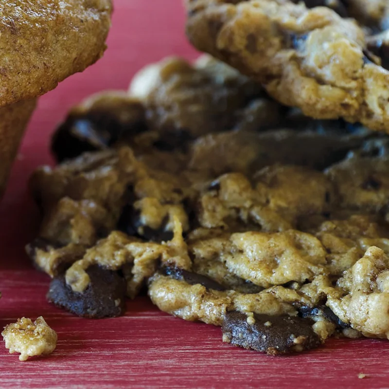

The Heart-Healthiest Chocolate Chip Cookies in the World

Description
When you replace butter and eggs with ground walnuts, and all-purpose flour with a blend of oat flour and oatmeal, you get a moist, chewy, vegan cookie
that’s loaded with good-for-your-heart ingredients.
Ingredients
- 3 Tbs. canola oil
- 2 cups walnuts
- 1 cup light brown sugar
- 2 tsp. vanilla extract
- 11/2 cups oat flour
- 1 tsp. baking soda
- 1 tsp. salt
- 1/4 tsp. ground cinnamon
- 2 cups rolled oats
- 3 3.5-oz. bars bittersweet vegan chocolate, chopped, or 11/2 cups vegan chocolate chips
Steps
- Preheat oven to 350°F. Coat 2 baking sheets with cooking spray, or line with parchment paper.
- Blend walnuts in food processor 30 seconds, or until ground into a fine meal. Add canola oil, and blend 2 to 3 minutes more, or until mixture has the consistency of natural peanut butter, scraping down sides of food processor occasionally. Transfer to bowl.
- Whisk together brown sugar and ½ cup water in small saucepan, and bring mixture to a boil. Pour brown sugar mixture over ground walnut butter, add vanilla extract, and stir until no lumps remain.
- Whisk together oat flour, baking soda, salt, and cinnamon in separate bowl. Stir oat flour mixture into walnut mixture. Cool 10 minutes. Fold in oats, then chocolate chips.
- Shape cookie dough into 2-inch balls, and place 2 inches apart on prepared baking sheets. Flatten cookies with bottom of drinking glass dipped in water. Bake 8 to 10 minutes, or until cookies begin to brown and tops look dry. Cool 3 minutes on baking sheets, then transfer to wire rack to cool completely.